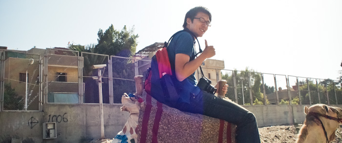
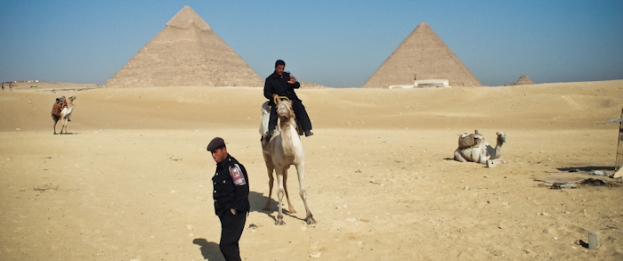
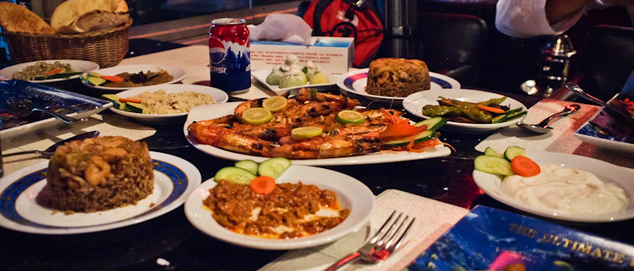

Cairo, White Desert
Summary
- 일정 : 2009년 11월 7일 ~ 2009년 11월 12일
- 장소 : 이집트 카이로, 바하리아
To the Cairo
갑작스러운 결정이었습니다. 전혀 예상하지도 못했는데, 교수님의 결정으로 석사 1년차 4명이 2명은 이집트의 ICIP학회에 가고 나머지 2명이 하와이의 GLOBECOM 학회에 가게되었습니다. 많은 한국 여자학생들에게 이집트는 동경의 대상이라고 합니다. 그 독특한 문화에 대한 호기심과, 사막, 그리고 피라미드는 흥미를 자아내게 합니다. 거기에다 이집트에 관한 소설이 환상을 품게 만들었다고 하네요. 아내에게 사진을 보여주고 실상을 말해주니 이젠 가기 싫어졌다고 합니다. :)
학회에 발표하러 가는 것이 아니라 따라가는 것이기에 마음이 가벼웠습니다. 무엇하나 거리낄 것 없고 그저 주어진 시간에 세미나를 듣고 즐기고 오면 되는 것이었죠. 그래서 그런지 더더욱 재미있었던 여행 같습니다.

15시간을 넘게 비행기를 타는 과정은 여전히 괴롭습니다. 좁은 이코노미 의자에서 잠도 제대로 잘 수 없는 환경에서 15시간 동안 할 수 있는 일이라고는 글을 끄적거리거나 책을 읽는 것 외에는 "Can you bring snacks for me?"라고 말하며 음료와 땅콩과자를 먹는 것 밖에는 없었습니다.
내가 있는 곳은 중국 아니면 몽골 위를 날고있다.
비행기는 우즈베키스탄의 타슈켄트를 향해 날아가고 있다.
눈 아래 보이는 것은 끝없는 모래.
나무는 거의 보이지 않는 산과 모래만 펼쳐있다.
그러나 이곳에서도 마을이 보인다.
척박한 곳에서 삶을 이어가는 이들이 놀랍다.
놀라움은 여행을 통해 가장 많이 경험할 수 있는 것이다.
-- 2009/11/7 16:30
카이로의 공항에 도착해서 택시기사들과 흥정을 시작했습니다. 이리 깎고 저리 깎고 했지만, 사실 처음 이야기 했던 택시기사가 계속 따라오며 훼방을 놓는 바람에 저렴한 가격에 호텔이라 부르기도 뭣한 참 험한 숙소에 가는 가격을 비싸게 줄 수 밖에 없었습니다. 공항을 나오는 순간 허름했던 공항의 모습을 뒤로하고 곧장 카이로의 모습이 비춰집니다. 밤임에도 불구하고 건물이 흙색위주임을 확연히 알 수 있었습니다. 이국적인 모습에 정신이 팔릴법도 하지만 일행을 괴롭게 하는 큰 적이 모든 주변 환경에 집중할 수 없게 만들었습니다.
그것은 바로 매연 이었습니다. 도로엔 수많은 차들이 다니고 있었습니다. 그 차들의 대부분은 겉으로 보기에 20년은 넘어보이는 차들이었습니다. 녹슬고, 부서지고, 시끄럽고 낡은 차들이 내뿜어내는 매연은 자동으로 입을 막을 정도로 심했습니다. 코를 찌르는 독한 냄새 때문에 급기야 수건을 꺼내 입을 틀어 막았습니다.
일행을 더 괴롭게 만드는 것은 다름아닌 카이로의 교통이었습니다. 정지선이 없습니다. 신호등도 없습니다. 좌회전도 없고 멀리 나가서 유턴을 해서 돌아옵니다. 밤임에도 사람들은 무단횡단을 합니다. 신호도 없고 횡단보도도 없으니 무단횡단이 사실 무단횡단이 아닙니다. 시속 100킬로로 내달리고 차선 표시도 되어있지 않은 도로를 사람들은 건넙니다. 차와 사람과의 거리가 불과 10센치미터 차이를 두고 스쳐지나가는 경우도 종종 발생합니다. 도로에선 연신 크랙션이 울립니다. 일행이 탔던 택시는 급기야 크랙숀이 핸들 가운데 있지 않고 깜박이 넣는 바의 끝에 달려있습니다. 살짝만 건드려도 크랙션이 울립니다. 나름 편하게 만들어 놓긴 했지만 그 탓인지 택시기사는 연신 크랙션을 울려댑니다.
이런 미쳐버릴 것 같은 환경을 접하자 마자 '이거 하와이 갈걸' 하는 생각이 절로 듭니다. 이런 역경속에 1시간 반을 택시를 타고 숙소에 도착했습니다. 경비를 아껴서 다른곳에 잘 써보기 위해 나름 각오하고 저렴한 곳으로 잡았습니다. 그렇게 도착한 숙소는 생각보다 더 처참했습니다. 카페트는 청소가 되어있는지 안되어있는지 모를 지경이고, 침대는 스프링이 이미 낡아서 삐걱 소리가 나고 푹푹 들어갑니다. 이불은 때에 찌들어 있고 욕실은 물때가 가득합니다. 이거 참, 지금까지 여행하면서 지내온 숙소는 이 숙소에 비하면 5성 호텔급이라 부를 수 있을 것 같습니다.
첫날부터 이집트는 제 모든 상식을 깨버립니다. 예상 밖의 환경과 시설, 이젠 모든 것을 포기하고 그저 구경에 몰입하게 되었습니다.
Giza Pyramid
아침에 창 밖으로 들려오는 시끄러운 경적소리에 눈을 떴습니다. 시차로 인해 일찍 눈을 떴는데, 그 아침부터 경적소리는 끊이질 않습니다. 커튼을 걷고 창문을 열어 밖을 바라보는 순간, 눈 앞에 넓은 공사현장과 저 멀리 기자 피라미드가 보입니다. 숙소를 기자지구에 잡은 탓에 바로 피라미드가 보이나 봅니다.

숙소는 허름하지만 그래도 아침은 줍니다. 식당에 가 보니 여러 빵과 독특한 향을 풍기는 커피와 삶은 달걀등 아침을 때울만큼 충분하게 준비되어 있었습니다. 의외로 생각지도 못하게 잘 먹고 숙소를 나올 수 있었습니다.
카이로에는 버스 번호조차 알아 볼 수 없었습니다. 아라비아 숫자가 아닌 독특한 숫자표시라 전혀 볼 수 없어, 결국 택시를 탑니다. 택시금액은 환율로 치자면 몇천원 수준이라 아무런 걱정없이 택시를 탑니다.
기자 피라미드로 가자고 하고 조금 가다보니 길이 막히네요. 그런데 택시기사가 합승을 한다고 하더니 앞에 사람이 타고, 우리를 향해 반가운 듯이 영어를 어느정도 유창하게 하기 시작합니다. 이때 눈치 챘어야 합니다. 친구라고 말하고 집에 데려다 준다고 하고서는, 우리를 피라미드 정문이 아닌 다른 여행지로 인도하려고 했습니다. 아무것도 모르고, 낙타 태워준다길래 일단 "OK"를 외치고 따라 갔습니다. 피라미드 정문이 아닌 후문쪽에 낙타를 탈 수 있는 곳으로 데려다 주었습니다. 조금은 비싼 가격이지만 일행들이 타보고 싶어하니 저도 덩달아 승락. 말도 한번 타보지 못했는데 엉겁결에 낙타를 타고 피라미드를 돌게 생겼습니다. ^^

낙타는 정말 많이 흔들거렸습니다. 곧장 떨어질 것 같아 안장을 단단하게 쥐느라 나중엔 팔이 뻐근할 정도였습니다. 다리로 버티느라 나중엔 걷기 힘들 정도더군요. 느릿느릿 할 줄만 알았던 낙타인데, 몰이꾼이 열심히 때리니 이 녀석이 은근히 빨리 달립니다. 모래를 가로지르며 달리는게 재밌더군요.
그렇게 피라미드 지역에 진입을 하니, 피라미드 경찰이 가로막습니다. 그리곤 가이드가 얼마 돈을 쥐어줍니다. 강압적인 표정으로 무섭게 노려보던 경찰은 그제서야 표정을 풀고 우릴 들여보내줍니다.

가이드는 경찰이 부패했다고 막 욕을 합니다. 그런데 '당신들도 여행자 구슬려서 바가지 씌우지 않아?'라는 생각이 듭니다.
그렇지만 일단 들어온 것, 열심히 빨빨거리며 돌아다니고 사진을 찍습니다. 이전처럼 고민 연속의 여행이 아닌, 정말 단순히 즐기기 위한 여행입니다. 사색도 없고 음미도 없습니다. 막국수를 후루룩 먹듯, 풍경을, 그리고 삶을, 장면을 집어삼킵니다.
Old Cairo
어디를 가려고 했는지 모르겠습니다. 다만 택시를 타고 Mosque만 죽도록 외친기억밖에 없네요. 택시기사와 제가 제대로 이야기를 주고받은지 조차 불분명합니다. 택시기사는 제가 가려고했던 곳에 내려주질 않았습니다. 그냥 왠지 관광객인 것 같아 유명한 곳에 던져준 것 같았습니다.
그렇게 올드 카이로와 만나게 되었습니다.
마치 베네치아의 골목길을 따라 이리 저리 방향도 모른체 정처없이 걸었던 그때를 다시 보는 것 같았습니다. 올드 카이로의 골목 사이사이에는 삶이 넘칩니다. 시장에서는 알 수 없는 아랍어가 귀를 자극합니다. 형형색색 알록달록한 여자 속옷이 눈을 자극합니다. 외국인을 신기하다는 듯이 바라보는 사람들이 신경을 자극합니다. 은은하게 울리는 아랍 특유의 음악이 저를 깨웁니다.
저는 이런 것들이즐겁습니다. 꾸며진 외관이 아닌, 진짜 사람이 사는 이런 곳을 보는것이 즐겁습니다. 마치 처음 바다를 보는 어린아이마냥 신이 납니다.
그렇게 걷고 있는데 어디선가 많이 봤던 모스크가 나타났습니다. 처음엔 몰랐다가 익숙해서, 가져온 책을 펼쳐보았습니다. 우리가 가려고 했던 모스크는 아니지만, 이집트에서 꽤 유명한 모스크더군요. 이런 모스크가 시장통에 위치해 있습니다. 멋드러진 탑과 벽면을 지니고 있지만 어쩐지 시장과는 조금은 동떨어진 느낌이 듭니다. 사람들은 모스크 앞에서 과일을 팔고, 옷을 팔고 있습니다. 모스크라면 나름 신성한 장소로 생각될 줄 알았는데, 이 사람들에게는 모스크는 우리의 생각과는 조금은 다른듯 합니다.
이 모스크를 본 후에야, 우리가 어디에 있는지 알 수 있었습니다. 그리고 근처를 훑어보니 공원이 있네요. 공원을 한번 가보자는 생각에 발길을 그쪽으로 향합니다. 그런데 들어가면 들어갈 수록 골목은 좁아지고, 좁아집니다. 이 길이 진짜 공원으로 가는길인지 궁금해집니다. 길을 잃어버린 것은 아닐지 염려됩니다. 그동안 방향치는 아니라고 생각했는데, 다시 생각을 고쳐먹어야겠습니다. 그렇게 이리 저리 움직이면서 공원으로 가는중이라는 팻말을 찾았습니다.
AL AZHAR PARK, 우리가 가려고 하는 공원입니다.

공원엔 많은 사람들이 있었습니다. 카이로 시내에서는 거의 볼 수 없었던 커플들이 자리를 가득 채우고 있었습니다. 다들 어디갔나 했더니 여기있군요.
AL AZHAR PARK에서 바라보는 일몰은 지금까지 매연 가득하고 매순간이 추격전을 방불케 하는 차들, 귀가 아플정도로 시끄러운 경적소리의 최악의 카이로를 잊어버리게 할 만한 아름다운 일몰이었습니다.
생각하지도 못했던 장소에 와서 생각하지도 못했던 완전 다른 모습의 카이로를 발견했습니다.
(이날 저녁은 SEA GULL 이라는 곳에서 먹었습니다. 로컬 추천을 받아서 갔는데 생선을 직접 선택해서 먹을 수 있는 곳이었습니다. 추천합니다. 정말 맛있게 생선을 구워주더군요. 나일강을 바라보면서 멋진 저녁을 즐길 수 있었습니다.)

Bahariya Desert
이집트를 오기 전부터, 사막을 가보고 싶었습니다. 그래서 일정이 빠듯함에도 일행을 설득해서 이집트의 사막 투어를 신청하게 되었습니다. 우리가 갈 곳은 바하리아 사막, 그곳의 백사막에서 하룻밤 야영을 하는 프로그램입니다. 설레입니다. 사막이라니, 제가 일생에 한번 갈 수 있을까 의심했던 그곳을 가게됩니다.
바하리아로 가는 버스를 타기 위해 무닙 버스정류장으로 향합니다. 더이상 카이로로 돌아올 일이 없기에 모든 짐을 다 끌고 가다보니 짐이 많군요.
무닙의 공기는 정말 최악입니다. 숨을 쉬기 어려운매연에, 연신 피워대는 담배연기까지 가세하니, 결국 마스크를 착용할 수 밖에 없었습니다. 버스가 올 시간은 한참 남았는데 그동안 여기에서 기다려야 한다고 생각하니 끔찍하기만합니다. 인고의 시간이 지나고 버스를 타고 바하리아로 갑니다. 얼마나 먼지 자고 자고 또 자도 여전히 도로를 달리는 버스에 기진맥진합니다. 5시간이 넘게 지났을까, 그제서야 바하리아에 도착한 우리는 정신을 차리지도 못한 채 사막 투어에 나섭니다.
이젠 가이드 이름이 생각이 나질 않지만, 참 즐겁고 유쾌한 가이드였습니다.
지금까지 탄 버스 5시간에 또 차를 타고 사막을 들어가지만, 지금은 즐겁습니다. 풍경은 점점 변하고 황무지를 지나 시시각각 변합니다.
조금 늦은 탓인지 많은 것을 보지는 못하고 가볍게 이리 저리 보며 돌아다니니 어느덧 해는 지고 야영할 곳으로 갑니다.
백사막의 아름다움은 일몰에서도 드러납니다.
그러나 백사막, 흑사막, 크리스탈 마운틴, 그 모든것을 앗아가버릴 만큼 멋드러진 것은 야영장에서 보이는 밤하늘의 모래알처럼 수많은 별빛들이었습니다.
바하리아 사막은, 천체를 관측하는 광해 수준으로 보면 0 입니다. 즉 아무런 광해가 없는, 별빛을 있는 그대로 받아들이는 곳입니다.
은하수가 눈으로 깨끗하게 보입니다. 그 음영까지 확실하게 인식할 수 있을정도로 맑습니다.
맑은 하늘이었습니다. 캠핑을 제외하면 주변 100km이내에는 불빛조차 없는 적막한 곳, 그곳에서 별을 바라봅니다. 그믐달이어서 별을 보기에 최적이었습니다.
맛있는 저녁을 먹고 서로 이야기하며 시간을 보내고 하나 둘 자리에 들어갑니다. 시간이 아까운 저는 이리 저리 더 돌아다니며, 사막여우를 보고 별을 봅니다.

평생에 볼 별을 다 본 기분입니다. 아는 별자리는 모두 찾았고, 희미하게 안드로메다 은하까지 육안으로 확인했습니다. 더할 나위 없이 만족스러웠습니다.
하지만 사진으론 잘 남기지 못해서 아쉬움이 많습니다. 조금만 더 사진 찍는 법을 잘 알아서 왔더라면, 제가 이렇게 느낀 그 감흥을 그대로 전달할 수 있었을 겁니다. 그런 아쉬움이 가장 컸습니다.
Leaving Cairo
아침이 밝아오고 멋진 일출을 본 후, 일행은 다시 카이로 공항을 향합니다. 이제 다시 한국으로 돌아갈 시간입니다.
그 좋은 기억들, 나쁜 환경에 대한, 추억으로 변해버린 그 기억들을 어께에 짊어지니 그 무게 또한 무겁습니다. 그 탓인지 발걸음은 가볍지 않네요.
다시 한번 와보고 싶습니다. 아부심벨도 보고, 룩소르도 가보고, 아스완도 어떤곳인지 보고싶습니다.